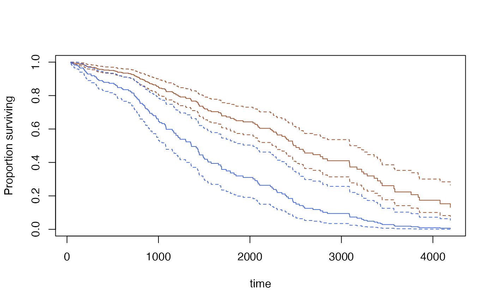

svycoxph.RdFit a proportional hazards model to data from a complex survey design.
Model formula. Any cluster() terms will be ignored.
survey.design object. Must contain all variables
in the formula
Expression to select a subpopulation
Rescale weights to improve numerical stability
A svycoxph object
New data for prediction
Compute standard errors? This takes a lot of memory for
type="curve"
"curve" does predicted survival curves. The other values
are passed to predict.coxph()
For AIC, more models to compare the AIC of. For svycoxph,
other arguments passed to coxph.
The penalty per parameter that would be used under independent sampling: AIC has k=2
The main difference between svycoxph function and the robust=TRUE
option to coxph in the
survival package is that this function accounts for the reduction in
variance from stratified sampling and the increase in variance from
having only a small number of clusters.
Note that strata terms in the model formula describe subsets that
have a separate baseline hazard function and need not have anything to
do with the stratification of the sampling.
The AIC method uses the same approach as AIC.svyglm,
though the relevance of the criterion this optimises is a bit less clear
than for generalised linear models.
The standard errors for predicted survival curves are available only by linearization, not
by replicate weights (at the moment). Use
withReplicates to get standard errors with replicate
weights. Predicted survival curves are not available for stratified
Cox models.
The standard errors use the delta-method approach of Williams (1995)
for the Nelson-Aalen estimator, modified to handle the Cox model
following Tsiatis (1981). The standard errors agree closely with
survfit.coxph for independent sampling when the model fits
well, but are larger when the model fits poorly. I believe the
standard errors are equivalent to those of Lin (2000), but I don't
know of any implementation that would allow a check.
An object of class svycoxph for svycoxph, an object of
class svykm or svykmlist for predict(,type="curve").
The standard error calculation for survival curves uses memory proportional to the sample size times the square of the number of events.
Binder DA. (1992) Fitting Cox's proportional hazards models from survey data. Biometrika 79: 139-147
Lin D-Y (2000) On fitting Cox's proportional hazards model to survey data. Biometrika 87: 37-47
Tsiatis AA (1981) A Large Sample Study of Cox's Regression Model. Annals of Statistics 9(1) 93-108
Williams RL (1995) "Product-Limit Survival Functions with Correlated Survival Times" Lifetime Data Analysis 1: 171--186
svykm for estimation of Kaplan-Meier survival curves and
for methods that operate on survival curves.
regTermTest for Wald and (Rao-Scott) likelihood ratio tests for one or more parameters.
## Somewhat unrealistic example of nonresponse bias.
data(pbc, package="survival")
pbc$randomized<-with(pbc, !is.na(trt) & trt>0)
biasmodel<-glm(randomized~age*edema,data=pbc,family=binomial)
pbc$randprob<-fitted(biasmodel)
if (is.null(pbc$albumin)) pbc$albumin<-pbc$alb ##pre2.9.0
dpbc<-svydesign(id=~1, prob=~randprob, strata=~edema, data=subset(pbc,randomized))
rpbc<-as.svrepdesign(dpbc)
(model<-svycoxph(Surv(time,status>0)~log(bili)+protime+albumin,design=dpbc))
#> Call:
#> svycoxph(formula = Surv(time, status > 0) ~ log(bili) + protime +
#> albumin, design = dpbc)
#>
#> coef exp(coef) se(coef) robust se z p
#> log(bili) 0.88592 2.42522 0.09140 0.09048 9.791 < 2e-16
#> protime 0.24487 1.27745 0.07825 0.08122 3.015 0.00257
#> albumin -1.04298 0.35240 0.21211 0.20454 -5.099 3.41e-07
#>
#> Likelihood ratio test= on 3 df, p=
#> n= 312, number of events= 144
svycoxph(Surv(time,status>0)~log(bili)+protime+albumin,design=rpbc)
#> Call:
#> svycoxph.svyrep.design(formula = Surv(time, status > 0) ~ log(bili) +
#> protime + albumin, design = rpbc)
#>
#> coef exp(coef) se(coef) z p
#> log(bili) 0.88592 2.42522 0.09838 9.005 < 2e-16
#> protime 0.24487 1.27745 0.09373 2.612 0.00899
#> albumin -1.04298 0.35240 0.21966 -4.748 2.05e-06
#>
#> Likelihood ratio test=NA on 3 df, p=NA
#> n= 312, number of events= 144
s<-predict(model,se=TRUE, type="curve",
newdata=data.frame(bili=c(3,9), protime=c(10,10), albumin=c(3.5,3.5)))
plot(s[[1]],ci=TRUE,col="sienna")
lines(s[[2]], ci=TRUE,col="royalblue")

quantile(s[[1]], ci=TRUE)
#> 0.75 0.5 0.25
#> 1435 2503 3574
#> attr(,"ci")
#> 0.025 0.975
#> 0.75 1217 1786
#> 0.5 2256 3170
#> 0.25 3222 Inf
confint(s[[2]], parm=365*(1:5))
#> 0.025 0.975
#> 365 0.8375139 0.9453781
#> 730 0.7382750 0.8999016
#> 1095 0.4784105 0.7478460
#> 1460 0.3192009 0.6206764
#> 1825 0.2149475 0.5292978